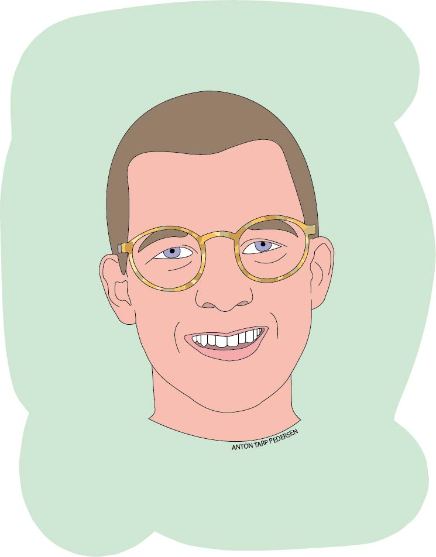

Illustrationen nedenfor er produceret i programmet Adobe Illustrator. Det er et selvportræt, som er lavet med værktøjet pentool. Den er tegnet ud fra et billede, som ses under illustrationen.
Pentool bliver i andre sammenhænge ofte benyttet til at lave logoer og andre grafiske designs.
Pentool bliver i andre sammenhænge ofte benyttet til at lave logoer og andre grafiske designs.
